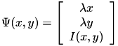
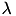
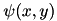
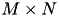
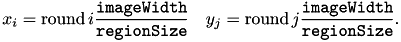
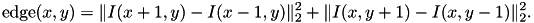
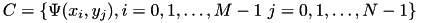
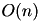
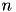
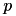

slic.h implements the Simple Linear Iterative Clustering (SLIC) algorithm, an image segmentation method described in [1] .
Overview
SLIC [1] is a simple and efficient method to decompose an image in visually homogeneous regions. It is based on a spatially localized version of k-means clustering. Similar to mean shift or quick shift (quickshift.h), each pixel is associated to a feature vector

and then k-means clustering is run on those. As discussed below, the coefficient  balances the spatial and appearance components of the feature vectors, imposing a degree of spatial regularization to the extracted regions.
SLIC takes two parameters: the nominal size of the regions (superpixels) regionSize and the strength of the spatial regularization regularizer. The image is first divided into a grid with step regionSize. The center of each grid tile is then used to initialize a corresponding k-means (up to a small shift to avoid image edges). Finally, the k-means centers and clusters are refined by using the Lloyd algorithm, yielding segmenting the image. As a further restriction and simplification, during the k-means iterations each pixel can be assigned to only the 2 x 2 centers corresponding to grid tiles adjacent to the pixel.
The parameter regularizer sets the trade-off between clustering appearance and spatial regularization. This is obtained by setting
![\[ \lambda = \frac{\mathtt{regularizer}}{\mathtt{regionSize}} \]](form_370.png)
in the definition of the feature .
After the k-means step, SLIC optionally removes any segment whose area is smaller than a threshld minRegionSize by merging them into larger ones.
Usage from the C library
To compute the SLIC superpixels of an image use the function vl_slic_segment.
Technical details
SLIC starts by dividing the image domain into a regular grid with  tiles, where
![\[ M = \lceil \frac{\mathtt{imageWidth}}{\mathtt{regionSize}} \rceil, \quad N = \lceil \frac{\mathtt{imageHeight}}{\mathtt{regionSize}} \rceil. \]](form_373.png)
A region (superpixel or k-means cluster) is initialized from each grid center

In order to avoid placing these centers on top of image discontinuities, the centers are then moved in a 3 x 3 neighbourohood to minimize the edge strength

Then the regions are obtained by running k-means clustering, started from the centers

thus obtained. K-means uses the standard LLoyd algorithm alternating assigning pixels to the clostest centers a re-estiamting the centers as the average of the corresponding feature vectors of the pixel assigned to them. The only difference compared to standard k-means is that each pixel can be assigned only to the center originated from the neighbour tiles. This guarantees that there are exactly four pixel-to-center comparisons at each round of minimization, which threfore cost , where  is the number of superpixels.
After k-means has converged, SLIC eliminates any connected region whose area is less than minRegionSize pixels. This is done by greedily merging regions to neighbour ones: the pixels  are scanned in lexicographical order and the corresponding connected components are visited. If a region has already been visited, it is skipped; if not, its area is computed and if this is less than minRegionSize its label is changed to the one of a neighbour region at that has already been vistied (there is always one except for the very first pixel).